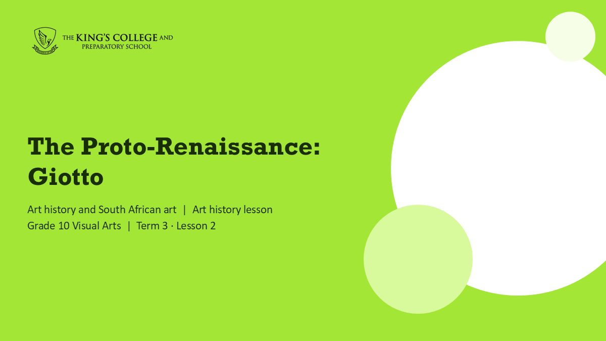

Term 3 · Lesson 2 · Art history lesson
The Proto-Renaissance: Giotto
Start Here
Today I Will
- Explain how Giotto moved painting from Byzantine flatness to natural space and feeling
- Describe the buon fresco technique
- Compare a Byzantine-style Madonna with Giotto's Madonna
Look at two paintings of Mary on a throne. Which one looks as if she could stand up and walk away?
Words to Know
| Word | Meaning |
|---|---|
| Proto-Renaissance | The period just before the Renaissance (c. 1280 – c. 1400) when painters began to show natural, solid forms. |
| Fresco | A wall painting made on plaster. |
| Buon fresco | True fresco: pigment in water painted onto wet lime plaster so the colour becomes part of the wall. |
| Naturalism | Showing people and things as they really look, with weight, depth and real feeling. |
| Giornata | The patch of fresco plaster laid and painted in one day. |
| Modelling | Using light and shade to make a form look three-dimensional. |
Slides

Videos
Notes
From Byzantine flatness to natural space and feeling: Giotto's Arena Chapel frescoes; fresco technique.
From Byzantine to Natural
| Byzantine style (Cimabue, c. 1280 – 1290) | Giotto (Ognissanti Madonna, c. 1310) |
|---|---|
| Flat gold background; the figures seem to float in a holy, timeless space. | Gold remains, but the throne has real depth and Mary sits firmly inside it. |
| Long, slender figures with patterned drapery lines. | A solid body with weight under the robes, modelled with light and shade. |
| Faces are calm, formal and symbolic. | Faces and gestures begin to show real human feeling. |
| Angels are stacked up the sides like a pattern. | Angels overlap and stand in space around the throne. |
How Buon Fresco Works
- Prepare the wall: Rough layers of lime plaster go on first, and the design is sketched on top.
- Lay one giornata: Each morning a fresh, smooth layer of plaster is laid, only as much as can be painted that day.
- Paint while wet: Pigment mixed with water is brushed on quickly. As the plaster dries, the colour is locked in.
- No second chances: Mistakes mean chipping off the plaster. Giotto planned every scene carefully before he began.
Giotto took Mary off the gold and placed her in a real, solid world.
Practical
You need: History booklet, visual journal, both images on screen
Byzantine Madonna Versus Giotto's Madonna
- Draw a two-column table in your journal: Cimabue (Byzantine style) and Giotto.
- Describe: write the subject, the setting and the mood of each painting.
- Analyse: compare space, tone (modelling) and line using identify, describe, effect.
- Interpret: what was each artist trying to make the viewer feel about Mary and Christ?
- Opinion: which painting do you find more convincing, and why? Give two reasons.
- Finish with one sentence explaining why Giotto is called a pioneer of naturalism.
Test Yourself
- Identify two ways Giotto made his figures look more natural than Byzantine figures.
- Explain why a fresco painter had to work quickly.
- In The Lamentation, how does Giotto draw the viewer into the scene?
Show answers
1. Any two: solid weight under the drapery, modelling with light and shade, real emotion, a throne or setting with depth, overlapping figures. 2. The pigment must go onto wet plaster; once the giornata dries the colour cannot bind, so mistakes mean removing plaster. 3. Figures with their backs to us, a diagonal rocky ridge leading to Mary and Christ, and grieving faces that invite us to share the sorrow.
Finished Early?
Feel the change from Byzantine to Giotto in your own drawing.
- Draw a simple seated figure twice in your VJ.
- Make the first flat: outline only, patterned drapery lines, on a gold-shaded background.
- Make the second solid: shade the drapery with light and shade so a body seems to sit under it.
- Label each with 'Byzantine' or 'Giotto' and one feature.